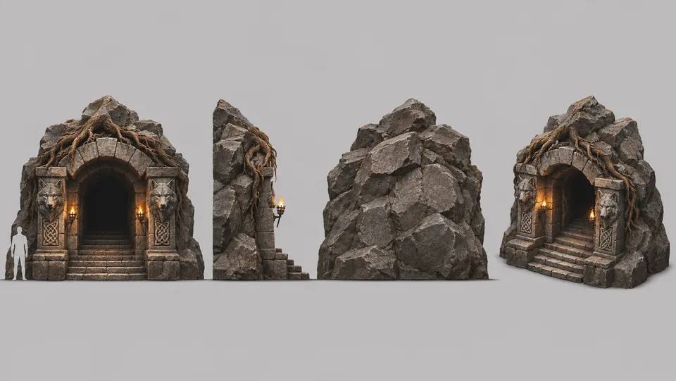
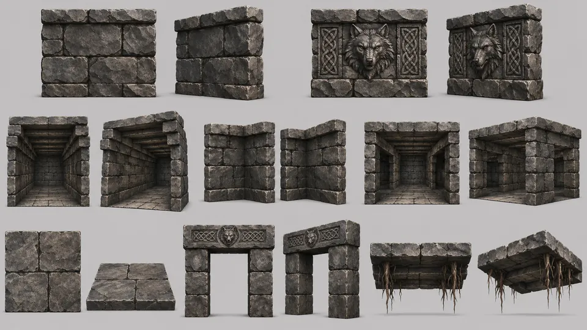

Start / Konzeptkunst
Konzeptkunst
Wolfwood & Hügelgrab
Der Wald, seine Steine und das Hügelgrab unter dem Hügel.
Orte im Wald
1 von 21 fertig

FS-01Demnächst
FS-02Demnächst
FS-03Demnächst
FS-04Demnächst
FS-05Demnächst
FS-07Demnächst
FS-08Demnächst
FS-09Demnächst
FS-03-E1Demnächst
FS-03-E2Demnächst
FS-03-DDemnächst
FS-06-E1Demnächst
FS-06-E2Demnächst
FS-06-DDemnächst
FS-02-E1Demnächst
FS-02-E2Demnächst
FS-02-DDemnächst
FS-01-E1Demnächst
FS-01-E2Demnächst
FS-01-DDemnächst
Bäume
0 von 13 fertigFO-01Demnächst
FO-02Demnächst
FO-03Demnächst
FO-04Demnächst
FO-05Demnächst
FO-06Demnächst
FO-07Demnächst
FO-08Demnächst
FO-09Demnächst
FO-10Demnächst
FO-11Demnächst
FO-12Demnächst
FO-13Demnächst
Pflanzen
0 von 9 fertigPL-01Demnächst
PL-02Demnächst
PL-03Demnächst
PL-04Demnächst
PL-05Demnächst
PL-06Demnächst
PL-07Demnächst
PL-08Demnächst
PL-09Demnächst
Felsen und Totholz
0 von 5 fertigRK-01Demnächst
RK-02Demnächst
RK-03Demnächst
RK-04Demnächst
RK-05Demnächst
Das Hügelgrab
2 von 8 fertigDer Dungeon unter dem Hügel: seine Hallen, seine Brücke und die Kammer des Endgegners.



DK-03Demnächst
DK-04Demnächst
DK-05Demnächst
DK-06Demnächst
DK-08Demnächst
DK-07Demnächst